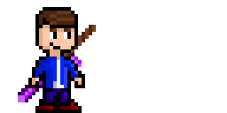
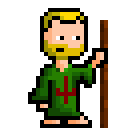
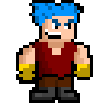

Project Phases

Project Phases is an RPG with a unique battle system. Overcome your enemies with
quick thinking in a timeline-based system. The game is being developed by Soltairus
and has no release date at this point.
Updates are released in big batches.
Goals are set for what I want to get done in that update, once I complete all the objective I make the update.
Updates come in video form on YouTube for a quick, visual overview of the game.
They are also posted on this website here to get in more detail about smaller changes and features and the challenges that came while developing them.
This game is a work in progress. This page will be updated as new information and new features are added into the game.
Overview Video
Note: This video is an overview of a much older version of the game and many new features have been added since the making of this video. However, it still does a good job of conveying the basic idea of Project Phases.
Battles
Battles are based on a real-time timeline system. The timeline is split up into three phases, Attack, Defend, and Wait. You also have Points, which you need to use certain attacks. You gain 2 points everytime you loop around the timeline. You can also skip any phase to get to the next one, in exchange for 2 points.

Attack Phase
In the attack phase, you can choose to attack the enemy, skip the attack phase, wait through the attack phase or use an item. You can choose from a variety of attacks depending on the character. You can attack as much as you want as long as you have enough Time (in the timeline to do the attack) and Points. Every move takes a certain amount of points and time, so thinking ahead is the key to victory. Skipping the Phase will take away some points. Waiting through the attack phase (so not attacking that turn) will give you 2 points in exchange. Using an item only takes time, no points. You can use it within the same turn just like an attack, and use it to power up later attacks in the same turn (refer here for a visual explanation). This is arguably the most important phase since all of your big decisions about your next attack are made here. Mastering the attack phase is the key to victory.
Defend Phase
In the Defend phase, you take little or no damage depending on the attack. Most attacks (like Smash Down or Fury) will have no affect and do zero damage. Some attacks (like slash) do minimal damage. Some other attacks only work if you hit in the defend phase and will do massive damage (like Defense Break) Your defend phase is where you want to be when your opponent attacks. Think ahead and know your options to minimize damage.
Wait Phase
The wait phase is a resting phase for all character. Everyone is open to attack in this phase. If you get attacked in this phase, you will take full damage. You are vunerable during your wait phase, so try to stay out of it if you can. Skipping over it is not always an option, so minimizing the amount of times the enemy can attack you in this phase is crucial to winning the battle.
Characters
Daryl
Daryl is a young man who has been sent to protect his fellow citizens from deadly attacks. His journey takes him far and wide, through rivers and plains alike! He carries his trusty sword with him to insure success.
Clint
Clint is a friend of Daryl, along for the ride. He is proficient in healing, and will make sure everyone is at their best with his Staff of Healing. Whenever he must fight however, he will use his staff to attack his foe with no fear!
Oliver
Oliver is strong man. He carries around his mighty Rock Sword. With it, he can slash multiple opponents at once! He may also crush an enemy in one powerful strike.
Enemies
Clockman
Clockman is a robot made of old clocks. He will wait patiently for the right time to strike, insuring victory. He is a mastermind of strategy and a formidable opponent.
Crocman

Created by a mad scientist, Crocman roams the rivers searching for it next meal. He causes much danger for the villagers nearby. He can take bullets like a pro, but swords are his worst enemy.
Lockman

Lockman is a classy gentlemen, staying locked at all times. He attacks by shooting bullets out of his arm, striking anyone in his way. He is tough to crack, but has lost before and has learned well from his experiences.
Overworld